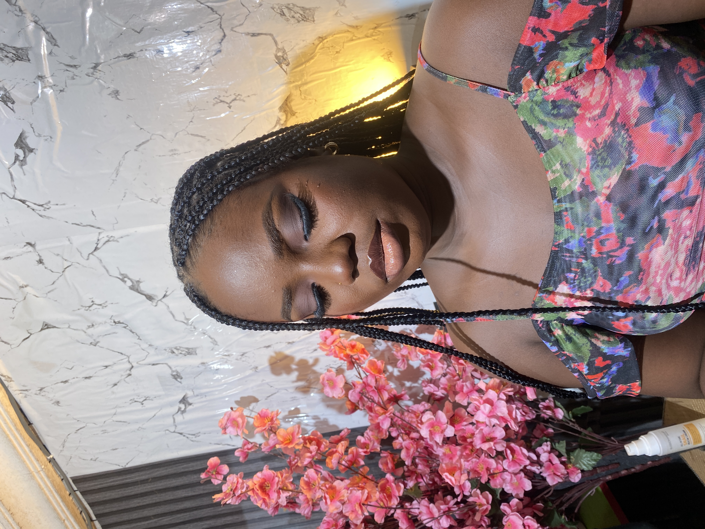

About Debs-Dev
Frontend developer passionate about crafting interactive, accessible, and delightful digital experiences. I’m on a continuous journey of learning, creativity, and innovation.
🌱 Bio
Hello! I'm Debs-Dev a frontend enthusiast exploring the art and logic of web development. I love turning design ideas into responsive, user-centered, and performant web applications.
🎯 Goals in this Program
- Master React.js and reusable components
- Enhance my UI/UX design skills
- Earn through tech
💡 Areas of Low Confidence
I sometimes find debugging or complex logic challenging, but each day, I’m growing stronger through consistency and hands-on practice.
🧠 Note to Future Self
“You started from zero, but now you build and inspire others. Keep coding, stay kind, and never stop learning.”
🚀 Extra Thoughts
Collaboration and creativity fuel my passion. Every project is a step forward, every challenge a new opportunity to shine.